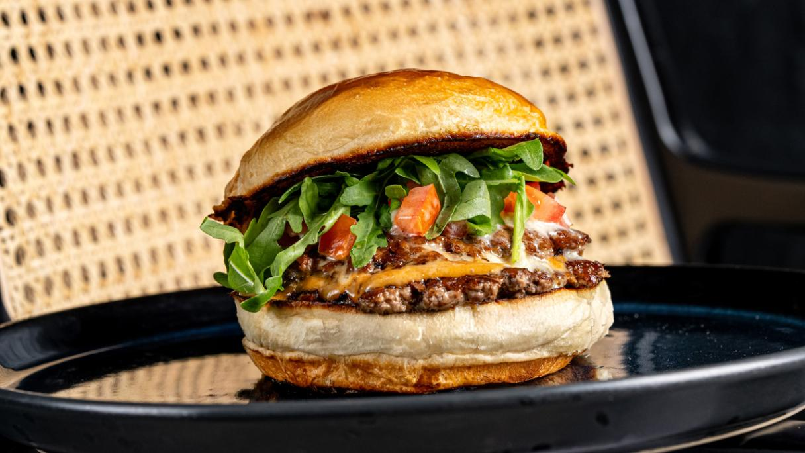

Menu Snack
Nos Planchettes
-
La Franche-Comtoise
Fromages : Comté affiné 18 mois, Morbier onctueux.
Charcuteries : Saucisse de Morteau fumée, saucisson sec artisanal.
Accompagnements : Cornichons, noix du Jura, raisins secs.
Pain : Tranches de pain de campagne & pain aux noix maison. -
La Gourmande
Fromages variés : Comté affiné 12 mois, Tomme de Jura au laitage doux.
Charcuteries : Jambon cru de Luxeuil, coppa locale, bœuf séché (bressi).
Accompagnements : Noix concassées, confiture de figues maison, bâtonnets de légumes croquants (carotte, céleri).
Pain : Baguette tradition & crackers aux graines. -
La Royale
Fromages d’exception : Comté affiné 24 mois, Bleu de Gex AOP.
Charcuteries de prestige : Filet mignon séché, saucisson sec au poivre.
Accompagnements : Mélange de fruits secs (abricots, raisins), miel de sapin du Jura.
Pain : Pain aux noix & pain de seigle.
Nos Salades
-
Fraîcheur d’Été
Mélange : jeunes pousses (roquette, mâche), tomates cerises cœur de bœuf, concombre bio, oignons rouges émincés, pousses de tournesol.
Vinaigrette : légère au citron vert et huile de noix. -
Comtoise
Base : jeunes pousses & mâche.
Ingrédients : dés de Comté affiné 12 mois, noix du Haut-Doubs, jambon cru de Luxeuil en lamelles, croûtons à l’ail frais.
Vinaigrette : à l’huile de noix et moutarde à l’ancienne. -
La Gourmande
Mélange : mesclun & épinards frais.
Ingrédients : magret de canard fumé du Jura, œuf poché coulant, pommes de terre grenaille tièdes, tomates confites, copeaux de Comté.
Sauce : yaourt aux herbes de montagne (ciboulette, estragon).
Nos Burgers
-

Le Classique
Composition : steak haché 180 g, fromage fondu (Comté ou cheddar), salade croquante, tomate cœur de bœuf.
Sauce : maison (ketchup fumé & mayonnaise à l’ail).
Accompagnement : servi avec frites maison. -
Le Franc-Comtois
Composition : steak haché 180 g, Comté fondant, oignons caramélisés au vin jaune, moutarde à l’ancienne, pickles de cornichons.
Pain : brioché artisanal. -
Le Végétarien
Galette : légumes de saison (courgette, carotte, pois-chiche).
Fromage : chèvre frais.
Sauce : yaourt aux herbes.
Garniture : tomate séchée, jeunes pousses.
Pain : aux céréales.
Nos Snacks & Petites Faims
-
Frites Maison
Pommes de terre : locales (variété Bintje), coupées à la main.
Assaisonnement : fleur de sel du Jura.
Sauce : ketchup maison. -
Onion Rings
Rondelles : d’oignons bio enrobées d’une pâte légère à la bière artisanale du Haut-Doubs.
Sauce : barbecue fumée. -
Mini Croque-Monsieur
Pain : de mie artisanal.
Garniture : jambon de pays, Comté fondant, nappé d’une touche de béchamel légère. -
Beignets de Comté
Bouchées : de Comté affiné 24 mois, panées et frites.
Accompagnement : confiture de piments douce.
Nos Fournisseurs Locaux
à Malbuisson et Labergement-Ste-Marie
Viande et Charcuterie
Boucherie Grésard / Paillard
Fromages
Fromagerie Michelin, Fruitière des Lacs
Boulangerie
Boulangerie chez Baverel